Visa & Residence
International students must complete alien registration at their local Immigration Office within 90 days of arrival, and must apply for an extension before their period of stay expires. The Office of International Affairs helps with preparing documents and booking appointments.
| Item | Fee |
|---|---|
| Alien registration | KRW 30,000 |
| Extension of stay | KRW 60,000 |
| Change of status | KRW 130,000 |
- D-2 Degree programs such as associate and bachelor’s degrees
- D-4 Korean language program (attached language institute)
- D-10 Job-seeking status after graduation
Insurance
Since March 2021, international students residing in Korea are automatically enrolled in National Health Insurance, becoming regional subscribers six months after arrival. For the initial gap period, please also join the student group insurance the university recommends so that you are never without cover.
Dormitory

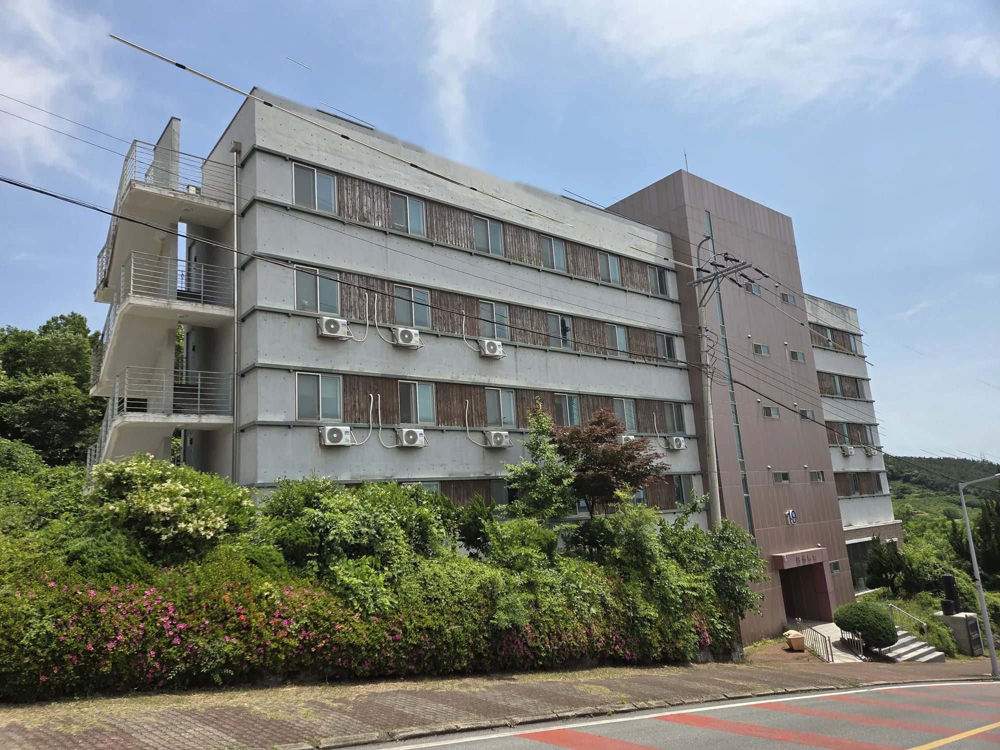
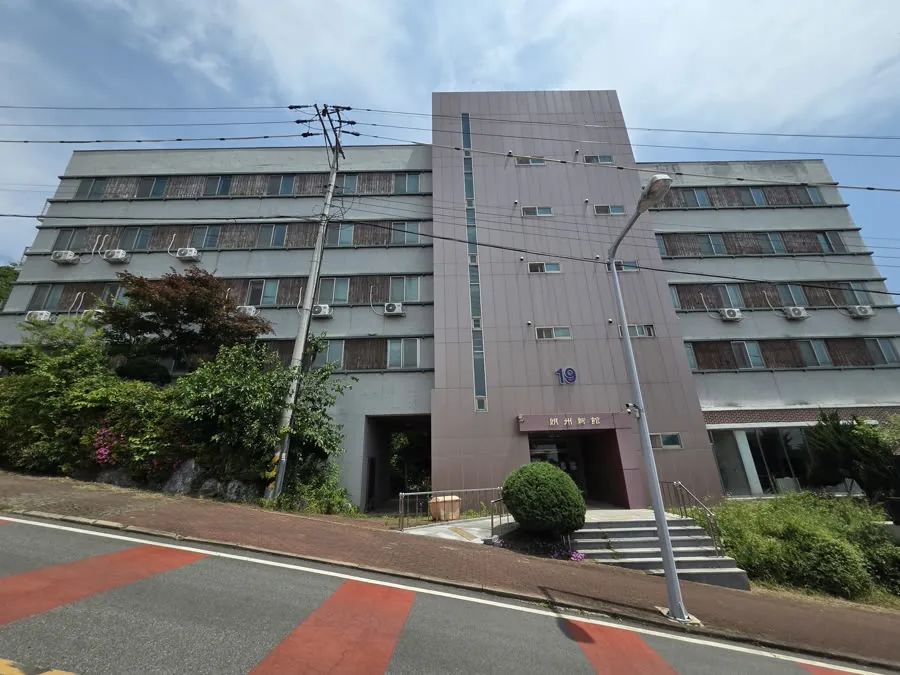
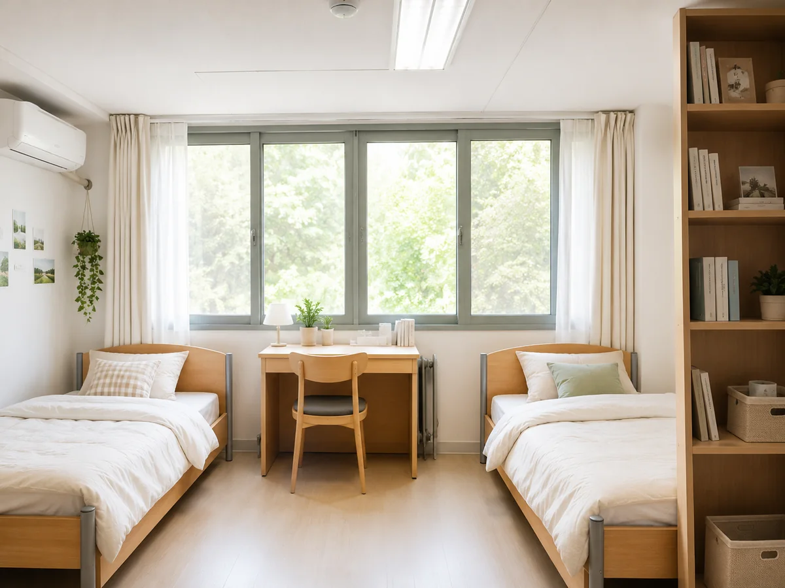
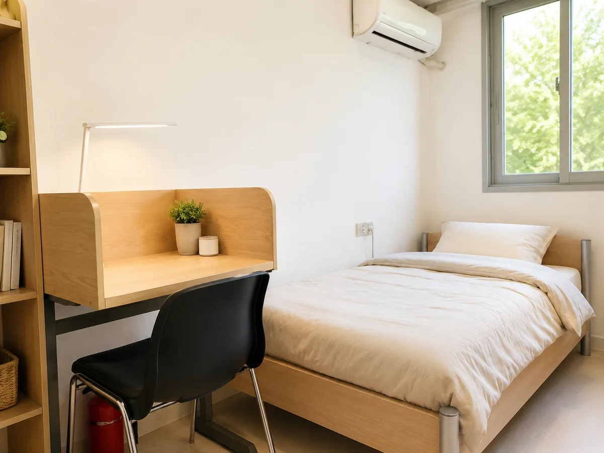
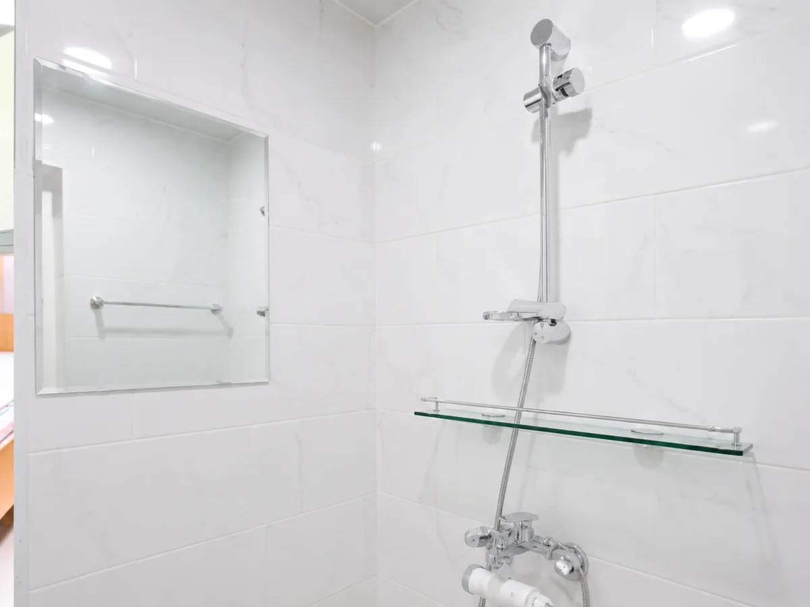
Dormitory penalty point table (expand)
| Category | Offence | Points |
|---|---|---|
| Entry & exit | Changing rooms without the supervisor’s prior approval | 20 |
| Entering the opposite-sex hall without permission (outside meal times) | 15 | |
| Bypassing the access control system | 10 | |
| Lending your resident card or providing lodging to others | 10 | |
| Letting in outsiders or allowing them to enter | 10 | |
| Entering or leaving other than through the designated entrance | 5 | |
| Entry or exit recorded between 00:00 and 05:00 | 5 | |
| Conduct | Theft or disgraceful conduct unsuited to communal living | 20 |
| Sexual violence or harassment (indicted) | 20 | |
| Suspected sexual violence or harassment (reported) *removal cancelled if cleared | 20 (temporary removal) | |
| Use of psychotropic drugs or hallucinogens; notifiable infectious disease | 20 | |
| Indefinite suspension or heavier penalty from the university | 20 | |
| University suspension of 31 days or more | 20 | |
| Cooking in the residence using open flames | 20 | |
| Accident following an unauthorised overnight absence | 20 | |
| Serious disrespect toward supervisors or failure to follow instructions | 15 | |
| Drinking, gambling or violence in the residence | 15 | |
| Smoking inside the dormitory | 10 | |
| Failure to complete fire evacuation training | 10 | |
| University suspension of 30 days or fewer | 10 | |
| Entering while heavily intoxicated with another person’s help | 10 | |
| Cooking in the residence using electrical appliances | 10 | |
| Vomiting inside or outside the residence | 5 | |
| Disorderly conduct damaging the reputation of the residence | 5 | |
| Receiving or opening another person’s post | 5 | |
| Parking at Nangju Hall dormitory | 5 | |
| Causing disturbance or noise that affects others | 5 | |
| Environment | Keeping pets in the room (dogs, cats, hamsters) | 20 |
| Graffiti, or posting and distributing notices without permission | 15 | |
| Disturbing others when using shared spaces (showers, laundry, reading room) | 10 | |
| Leaving air conditioners or heaters switched on | 5 | |
| Dumping rubbish or polluting in ways that disturb communal living | 5 | |
| Moving or altering facilities without permission | 3 | |
| Facilities | Wilfully destroying fixtures or facilities (compensation required) | 20 |
| Damaging fixtures or facilities (compensation required) | 10 | |
| Placing items outside windows or dropping them | 5 | |
| Blocking a toilet or drain through carelessness | 5 | |
| Prohibited items | Bringing in or using hazardous items (butane, flammables, weapons) | 5 |
| Bringing in outside heating appliances (electric burners, etc.) | 10 |
Other offences may receive 1–20 points through the supervisors’ meeting; penalties of 10 points or more are decided there. Leaving the dormitory without notice bars admission the following semester.
Campus Facilities
 LibraryWangin Hall (Bldg. 4), 2F · 09:00–17:30 · Textbook sales
LibraryWangin Hall (Bldg. 4), 2F · 09:00–17:30 · Textbook sales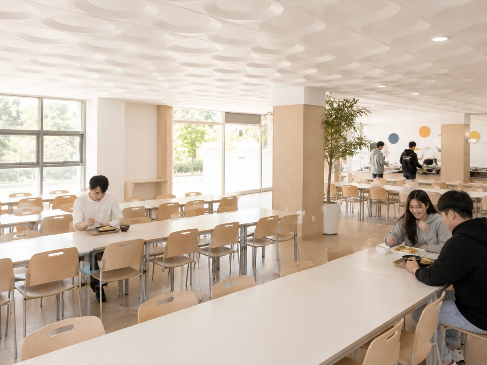
CafeteriaBongseok Hall (Bldg. 6), 1F · 09:00–15:00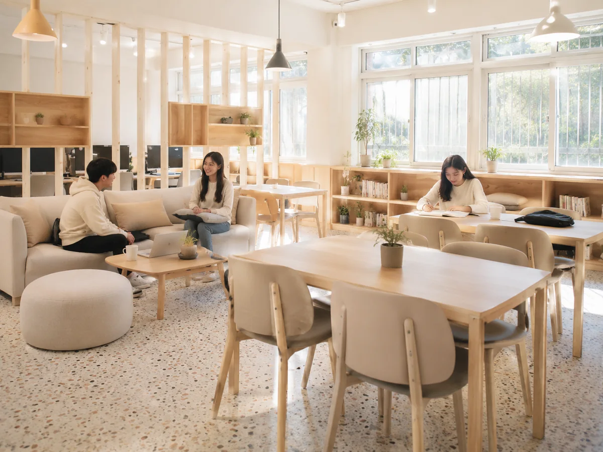
LoungeMain Hall (Bldg. 1), Rm 112 · 09:00–18:00 Certificate kioskMain Hall (Bldg. 1) lobby · 09:00–18:00
Certificate kioskMain Hall (Bldg. 1) lobby · 09:00–18:00 Leisure Landscape practice fieldNext to Jeongmu Hall (Bldg. 10) · 09:00–18:00
Leisure Landscape practice fieldNext to Jeongmu Hall (Bldg. 10) · 09:00–18:00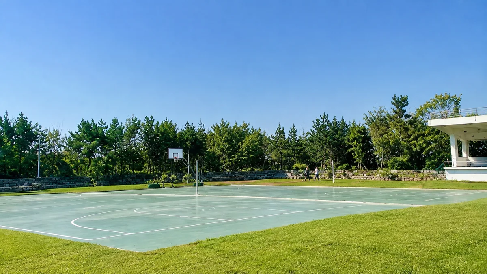
Sports fieldIn front of Wolchul Hall (Bldg. 13) and Jeongmu Hall (Bldg. 10) · 09:00–18:00 Leisure Landscape capstone fieldIn front of Wangin Hall (Bldg. 4) · 09:00–18:00
Leisure Landscape capstone fieldIn front of Wangin Hall (Bldg. 4) · 09:00–18:00 Health roomWangin Hall (Bldg. 4), Rm 111 · 09:00–18:00
Health roomWangin Hall (Bldg. 4), Rm 111 · 09:00–18:00 Convenience storeJeongmu Hall (Bldg. 10), 1F · 06:30–23:00
Convenience storeJeongmu Hall (Bldg. 10), 1F · 06:30–23:00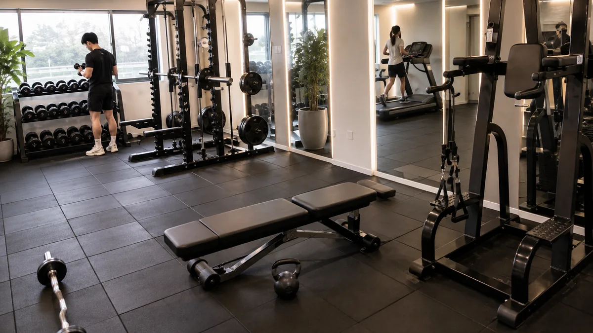
Fitness roomJeongmu Hall (Bldg. 10), 1F · 09:00–22:00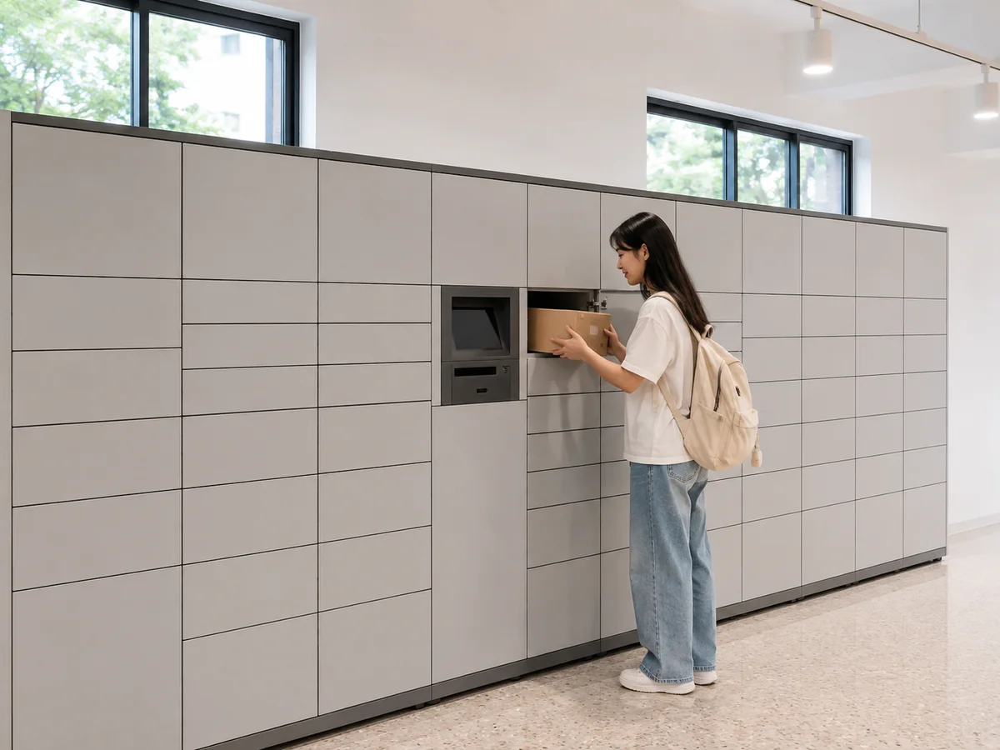
Parcel lockersJeongmu Hall (Bldg. 10), 1F · 09:00–22:00 Reading roomsSmall reading room, Wangin Hall 2F · Dormitory pet house 2F · 09:00–17:30
Reading roomsSmall reading room, Wangin Hall 2F · Dormitory pet house 2F · 09:00–17:30 VR labYohan Hall (Bldg. 18) · 09:00–18:00
VR labYohan Hall (Bldg. 18) · 09:00–18:00 Metaverse labMain Hall (Bldg. 1), Rm 401 · 09:00–18:00
Metaverse labMain Hall (Bldg. 1), Rm 401 · 09:00–18:00 ParkingBehind the Main Hall · 24 hours
ParkingBehind the Main Hall · 24 hoursOff-campus Facilities

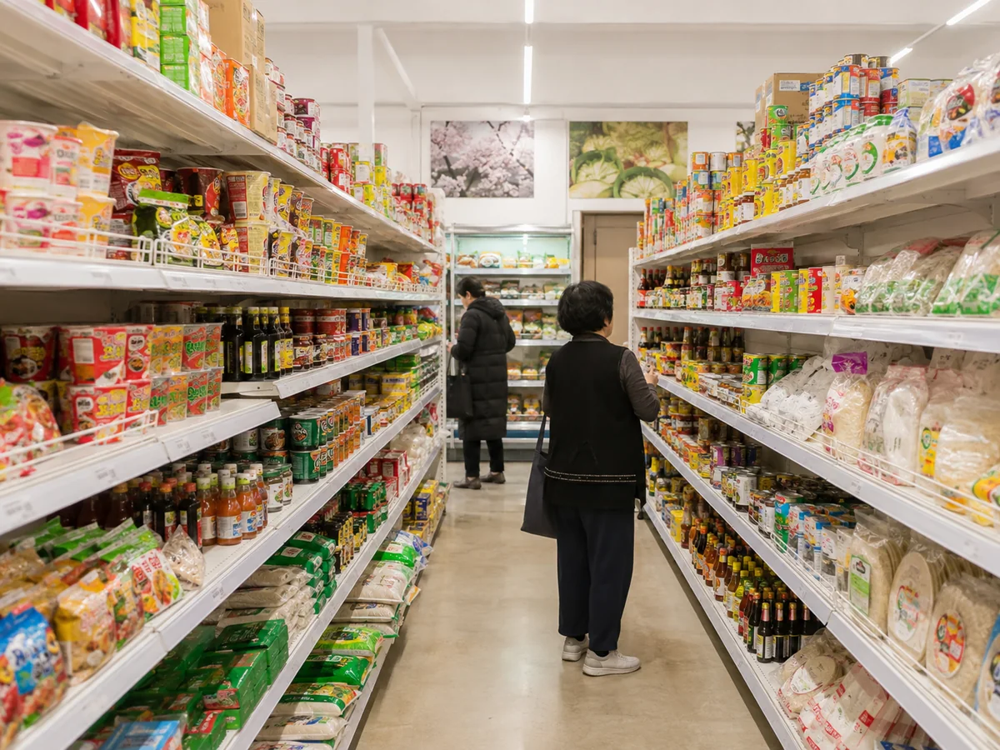
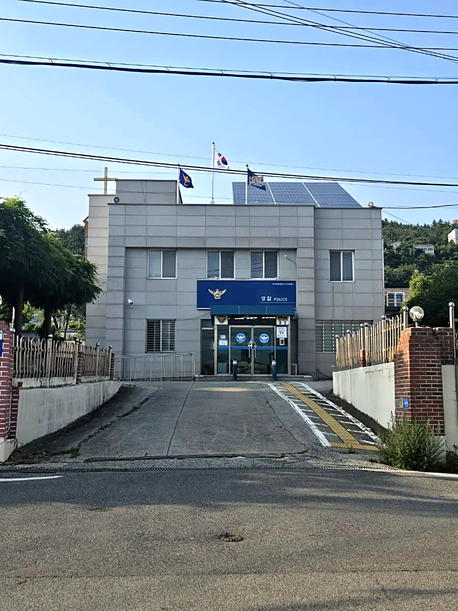